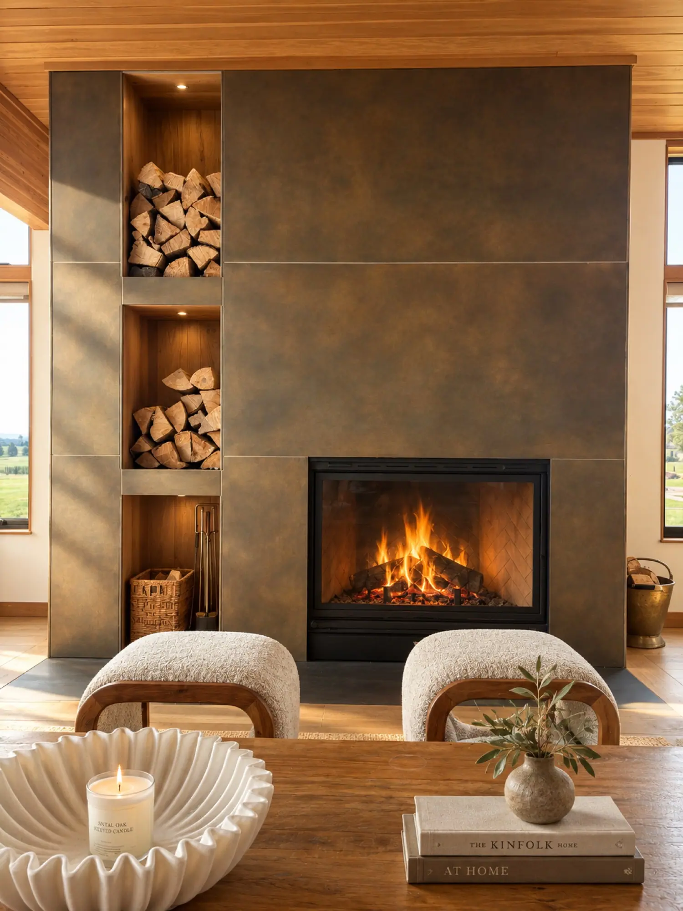
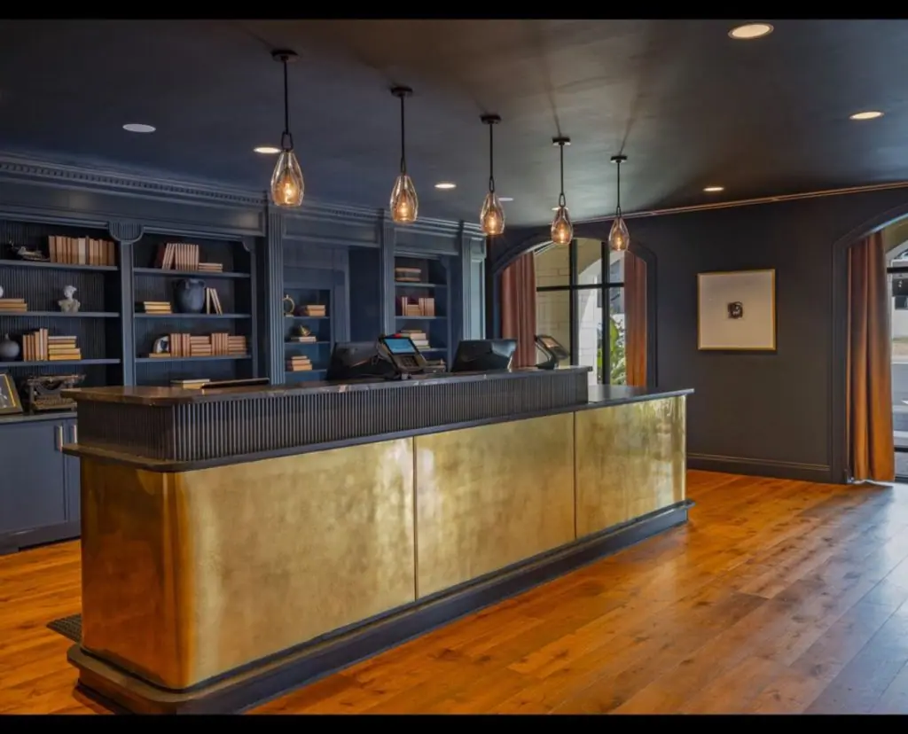
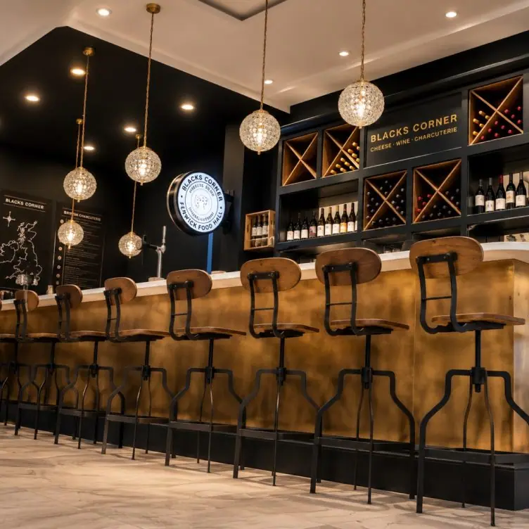
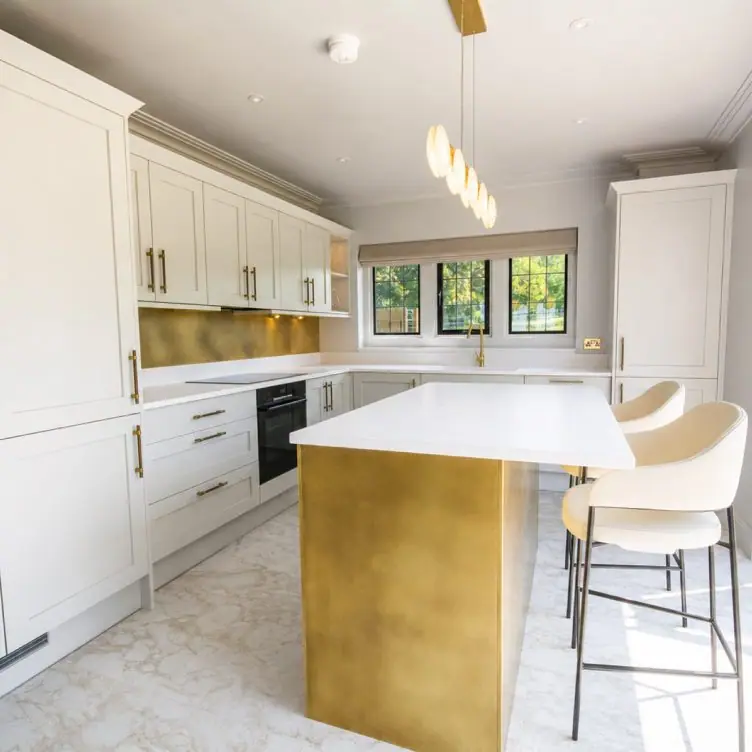
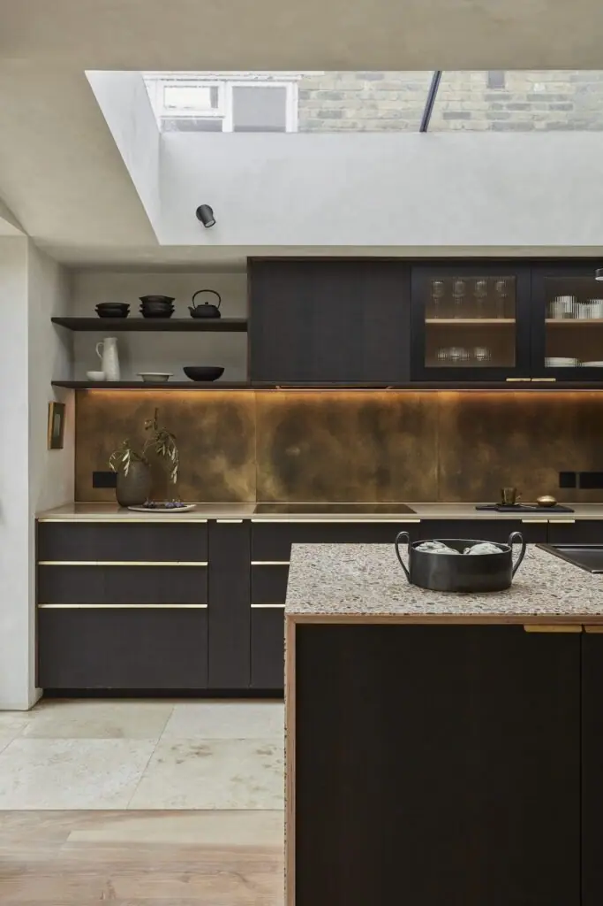

Statement surfaces, made to measure
From reception desks and bar fronts to feature walls, recesses and kitchen islands, our metal cladding brings warmth and character to homes, hotels, restaurants and offices.
Every panel is cut to your drawings and hand-finished in our UK workshop in any of our finishes — natural or aged brass and copper, zinc, blackened steel or Corten — then sealed for long-lasting protection.



From sketch to installation
1. Tell us about your project — send sizes, drawings or photos using the form below.
2. Choose your finish — order samples to see finishes in your space.
3. We make it — panels are cut, folded and hand-finished to your specification, ready to fit.
Tell us about your cladding project
Share your measurements, drawings or photos and we’ll come back with ideas and a quote.


If you can dream it, we’ll make it.
Bars, balustrades, staircases, worktops, cladding and pieces that don’t have a name yet. Our designers and craftspeople work in brass, copper, zinc and steel, and alongside wood.